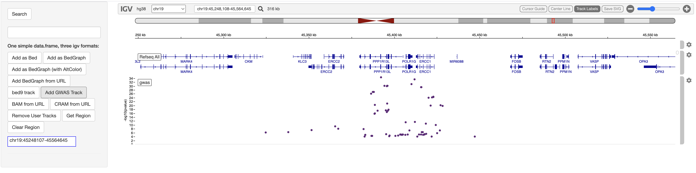

An htmlwidget wrapper of the Integrative Genomics Viewer (IGV) — embed an interactive genome browser in your Shiny apps, and drive it from R. One of only two Bioconductor packages bridging IGV to R.
🔬 Live demo
gladkia-igvshiny-demo.share.connect.posit.cloud
Click through BED / BedGraph / GWAS / BAM / CRAM tracks in a running app — no install required. (Hosted on Posit Connect Cloud; source in demo/posit-connect/.)

Installation
Release version from Bioconductor:
if (!require("BiocManager", quietly = TRUE))
install.packages("BiocManager")
BiocManager::install("igvShiny")Development version from GitHub:
remotes::install_github("gladkia/igvShiny")Quick start
library(shiny)
library(igvShiny)
options <- parseAndValidateGenomeSpec(genomeName = "hg38", initialLocus = "NDUFS2")
ui <- fluidPage(
igvShinyOutput("igv")
)
server <- function(input, output, session) {
output$igv <- renderIgvShiny({
igvShiny(options)
})
}
shinyApp(ui, server)From there, load tracks reactively with the load*Track* functions (loadBedTrack, loadBedGraphTrack, loadGwasTrack, loadBamTrackFromURL, loadCramTrackFromURL, …) and move the view with showGenomicRegion().
Features
- Interactive IGV genome browser as a Shiny
htmlwidget, usable as a Shiny module. - Stock genomes (hg38, hg19, mm10, tair10, …) and custom genomes from local or remote FASTA.
- Track loaders for BED, BedGraph, bed9, GWAS, SEG, VCF, BAM (URL / local), and CRAM (URL).
- Navigate and query the current view from R (
showGenomicRegion(),getGenomicRegion()). - Track-click events surfaced back to the Shiny server.
More examples live in inst/demos/.
Documentation
- 📦 Reference & articles: https://gladkia.github.io/igvShiny/
- 📖 Vignette:
vignette("igvShiny") - 🐛 Issues / feature requests: https://github.com/gladkia/igvShiny/issues
Contributing
Contributions are welcome — please open an issue or pull request. The package follows Bioconductor coding and review standards (see AGENTS.md).
License
MIT © the igvShiny authors (see LICENSE.md / DESCRIPTION). Originally created by Paul Shannon; lead developer and maintainer: Arkadiusz Gladki.